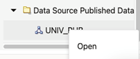

14.3.2.8 Publishing Oracle RDF Models
Note:
It is important to be aware that by enabling RDF data publishing and defining a public RDF data source, your public URL endpoints for RDF datasets are exposed. This endpoint URL can be used directly in applications without entering credentials.To publish an Oracle RDF model as a dataset:
- Right-click on the RDF model and select Publish from the menu as shown:
- Enter the Dataset name (mandatory), Description, and Default SPARQL. This default SPARQL can be overwritten on the REST request.
- Click OK.
The public endpoint GET URL for the dataset is displayed. Note that the POST request can also be used to access the endpoint.
This URL uses the default values defined for the dataset and follows the pattern shown:
http://${hostname}:${port_number}/orardf/api/v1/datasets/query/published/${dataset_name}You can override the default parameters stored in the dataset by modifying the URL to include one or more of the following parameters:- query: SPARQL query
- format: Output format (
JSON,XML,CSV,TSV,GeoJSON,N-Triples,Turtle) - options: String with Oracle RDF options
- rulebases: Rulebase names associated with dataset RDF model in an entailment
- params: JSON string with runtime parameters
(
timeout,fetchSize, and others) - bindings: JSON string with binding parameters (URI or literal values)
The following shows the general pattern of the REST request to query published datasets (assuming the context root as
orardf):http://${hostname}:${port_number}/orardf/api/v1/datasets/query/published/${dataset_name}?datasource=${datasource_name}&query=${sparql}&format=${format}&options=${rdf_options}¶ms=${runtime_params}&bindings=${binding_params}In order to modify the default parameters, you must open the RDF dataset definition by selecting Open from the menu options shown in the following figure or by double clicking the published dataset:Figure 14-40 Open an RDF Dataset Definition

Description of "Figure 14-40 Open an RDF Dataset Definition"The RDF dataset definition for the selected published dataset opens as shown:You can update the default parameters and preview the results.
Note:
- RDF user with administrator privileges can update and unpublish any dataset.
- RDF user with read and write privileges can only manage the datasets that the user created.
- RDF user with read privileges can only query the dataset.
Parent topic: RDF Data Page